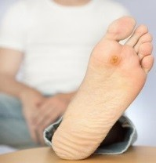
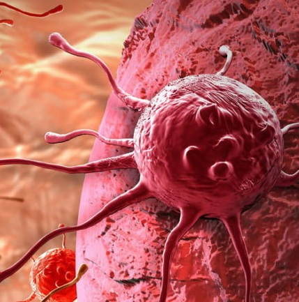
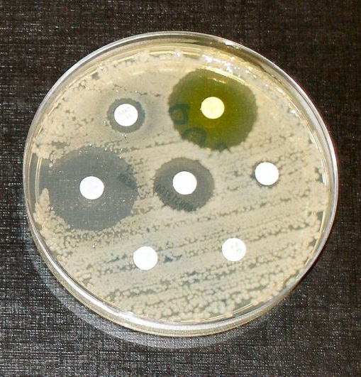
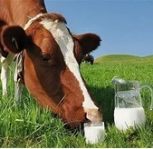
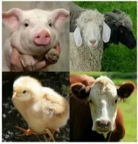
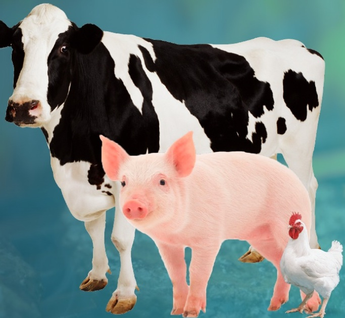
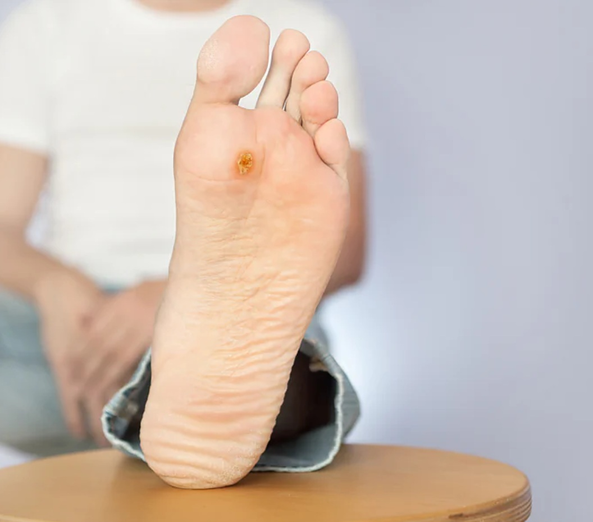
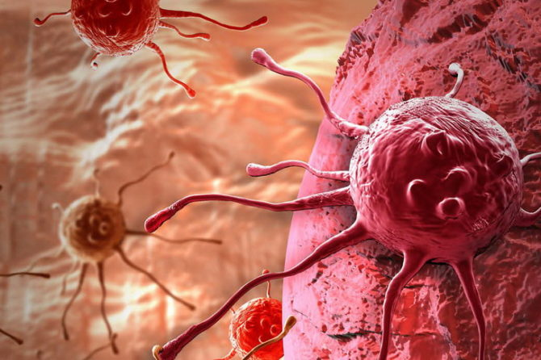
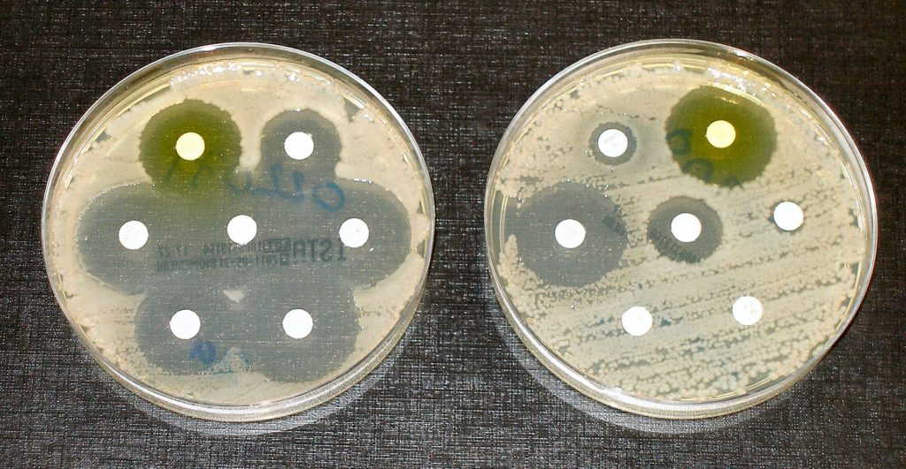
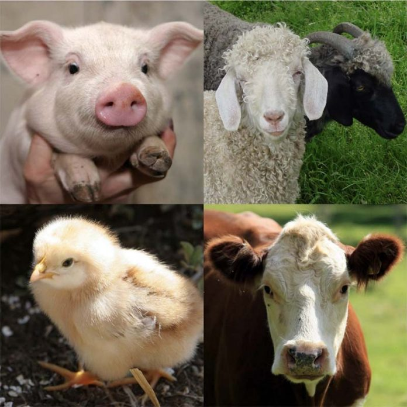

Примеры использования Арговита
Области народного хозяйства, в которых была показана высокая эффективность препаратов, содержащих Арговиты. Нажмите «Подробнее», чтобы увидеть результаты и список опубликованных работ.
1. Здравоохранение, медицина
Профилактика и лечение ЛОР-заболеваний, ОРВИ, гриппа, включая COVID-19
Результат: эффективная профилактика, снижается заболеваемость, ускоряется выздоровление.
Подробнее…Борьба с лекарственно устойчивыми формами туберкулёза
Результат: уменьшается бактерионосительство и бактериовыделение, снижается смертность, сокращаются сроки лечения, повышается качество жизни.
Подробнее…
Лечение диабетической стопы, инфицированных ран, язв, пролежней
Результат: ускоряется заживление, повышается качество жизни, предотвращаются ампутации.
Подробнее…
Онкология
Перспективное негенотоксичное средство борьбы с онкологическими заболеваниями.
Подробнее…
Борьба с антибиотикоустойчивостью «супермикробов»
Результат: увеличивается чувствительность (уменьшается резистентность) бактерий к антибиотикам.
Подробнее…2. Ветеринария, сельское хозяйство

Лечение мастита крупного рогатого скота
Результат: сокращаются сроки лечения, уменьшаются потери молока, снижается контаминация продукции антибиотиками.
Подробнее…
Биологически активные добавки в рационах животных и птицы
Результат: возрастает устойчивость к заболеваниям, повышается сохранность поголовья, увеличивается продуктивность.
Подробнее…
Профилактика и лечение кишечных инфекций у животных и птицы
Результат: уменьшается падеж, сокращаются сроки лечения и затраты, увеличивается продуктивность.
Подробнее…Лечение домашних животных: собак и кошек
Лекарственные ветеринарные препараты Tempernag и Nagpet производства компании BionAg (Мексика).
Подробнее…Растениеводство
Результат: повышается устойчивость растений к бактериальным и грибковым инфекциям, увеличивается урожайность и сохранность урожая.
Подробнее…Подробности и списки опубликованных работ
1.1 Профилактика и лечение ЛОР-заболеваний, ОРВИ, гриппа, включая COVID-19
Результат: эффективная профилактика, снижается заболеваемость, ускоряется выздоровление.
Во время пандемии COVID-19 в Мексике в контрольной группе из 118 врачей-волонтёров заболело COVID-19 33 человека (27%); в опытной группе, использовавшей наносеребро Арговит для полоскания горла, из 114 врачей-волонтёров заболело 2 человека (1,8%).
Компания BionAg (Мексика) с использованием нашего сырья выпускает антисептический препарат AG PROTECT для местного применения.
Список опубликованных работ с нашим серебром по данной тематике
- Almanza-Reyes H., Moreno S., Plascencia-López I., Alvarado-Vera M., Patrón-Romero L., Borrego B., Reyes-Escamilla A., Valencia-Manzo D., Brun A., Pestryakov A., Bogdanchikova N. Evaluation of silver nanoparticles for the prevention of SARS-CoV-2 infection in health workers: In vitro and in vivo. (2021) PLoS ONE 16(8): e0256401. DOI: 10.1371/journal.pone.0256401
- Бурмистров В.А., Богданчикова Н.Е., Гюсан А.О., Ураскулова Б.Б., Альманса-Рейес О., Альварадо-Вера М., Пласенсия-Лопес И., Пестряков А.Н., Рачковская Л.Н., Летягин А.Ю. Перспективы использования препаратов наноструктурированного серебра для борьбы с инфекционными заболеваниями, включая COVID-19. Сибирский научный медицинский журнал. 2021. Т.41. №5. С.4-15. DOI: 10.18699/SSMJ20210501
- Бурмистров В.А., Рачковская Л.Н., Попова Т.В., Котлярова А.А., Королев М.А., Летягин А.Ю. Перспективы применения препаратов коллоидного серебра для активной санации организма от патогенных микробов. Вестник Кыргызско-Российского славянского университета. 2018. Т.18. №9. С.23-26.
- Фидарова К.М. Послеоперационное лечение больных хроническим гнойным средним отитом и риносинуситом препаратами, содержащими наночастицы серебра. Диссертация на соискание учёной степени кандидата медицинских наук. 2016г. Автореферат.
- Фидарова К.М., Семёнов Ф.В. Местное применение препаратов на основе наночастиц серебра после операций в полости носа и околоносовых пазухах. Российская оториноларингология. 2016. №3 (82). С.147-151. DOI: 10.18692/1810-4800-2016-3-147-151
- Фидарова К.М., Семёнов Ф.В., Бабичев С.А., Качанова О.А. Перспективы использования препарата, содержащего наночастицы серебра, для эмпирической терапии ЛОР-инфекций, вызванных S. aureus. Российская оториноларингология. 2015. №5. С.127-129.
- Семёнов Ф.В., Бабичев С.А., Качанова О.А., Фидарова К.М. Экспериментальное обоснование использования препаратов, содержащих наночастицы серебра, в местной эмпирической терапии заболеваний лор-органов, вызванных P. aeruginosa и Acinetobacter sp. Российская оториноларингология. 2013. Т.66. №5. С.88-90.
- Семёнов Ф.В., Фидарова К.М. Лечение больных с хроническим воспалением трепанационной полости после санирующих операций открытого типа на среднем ухе препаратом, содержащим наночастицы серебра. Вестник оториноларингологии. 2012. №6. С.117-119.
1.2 Борьба с лекарственно устойчивыми формами туберкулёза
Результат: уменьшается бактерионосительство и бактериовыделение, снижается смертность, сокращаются сроки лечения, повышается качество жизни.
Список опубликованных работ с нашим серебром по данной тематике
- Калмантаева О.В., Фирстова В.В., Грищенко Н.С., Рудницкая Т.И., Потапов В.Д., Игнатов С.Г. Антибактериальная и иммуномодулирующая активность наночастиц серебра на модели экспериментального туберкулёза мышей. Прикладная биохимия и микробиология. 2020. Т.56. №2. С.190-197. DOI: 10.31857/S0555109920020087
- Гюсан А.О., Ураскулова Б.Б. Вопросы туберкулёза в оториноларингологии. Российская оториноларингология. 2017. №4(89). С.32-38. DOI: 10.18692/1810-4800-2017-4-32-38
- Ураскулова Б.Б., Гюсан А.О. Клинико-бактериологическое исследование эффективности использования наночастиц серебра для лечения туберкулёза верхних дыхательных путей. Вестник оториноларингологии. 2017. Т.82. №3. С.54-57. DOI: 10.17116/otorino201782354-57
- Ураскулова Б.Б. Туберкулёз гортани на современном этапе и пути повышения эффективности его лечения. Диссертация на соискание учёной степени кандидата медицинских наук. 2017г. Автореферат.
- Калмантаева О.В. Антибактериальное и иммуномодулирующее действие наночастиц серебра, углеродных нанотрубок на модели здоровых и инфицированных Mycobacterium tuberculosis мышей. Диссертация на соискание учёной степени кандидата биологических наук. 2016г. Автореферат.
1.3 Лечение диабетической стопы, инфицированных ран, язв, пролежней

Результат: ускоряется заживление, повышается качество жизни, предотвращаются ампутации.
Сотни людей были спасены от ампутации конечности благодаря препаратам с Арговитом.
Внимание! Файл PDF содержит натуралистичные фото ран и процесс их излечения.
Список опубликованных работ с нашим серебром по данной тематике
- Almonaci-Hernández C.A., Luna-Vazquez-Gomez R., Luna-Vazquez-Gomez R.A., Valenciano-Vega J.I., Carriquiry-Chequer N.I., Rembao-Hernández A., Gomez-Zendejas M.L., Almanza-Reyes H., Garibo-Ruiz D., Pestryakov A. and Bogdanchikova N. Nanomedicine Approach for the Rapid Healing of Diabetic Foot Ulcers with Silver Nanoparticles. Journal of Clinical and Medical Images. 2020. Vol.3. No.2. P.1-7.
- Almonaci Hernández C.A., Cabrera Torres I.M., López-Acevedo R., Juárez-Moreno K., Castañeda-Juárez M.E., Almanza-Reyes H., Pestryakov A., Bogdanchikova N. Diabetic Foot Ulcers Treatment with Silver Nanoparticles. Revista de Ciencias Tecnológicas RECIT. 2019. Vol.2(1). P.20-25. DOI: 10.37636/recit.v212025
- Коптев В.Ю., Боляхина С.А., Насартдинов Г.Ф., Бурмистров В.А. Средство для лечения ран различной этиологии у животных «Арговит спрей-3». Международный вестник ветеринарии. 2018. №2. С.49-53.
- Almonaci Hernández C.A., Juarez-Moreno K., Castañeda-Juarez M.E., Almanza-Reyes H., Pestryakov A., Bogdanchikova N. Silver Nanoparticles for the Rapid Healing of Diabetic Foot Ulcers. International Journal of Medical Nano Research. 2017. Vol.4. No.1. P.1-6. DOI: 10.23937/2378-3664/1410019
- Рабаданов Ш.Х. Комплексное лечение распространённого перитонита с использованием регионарной лимфотропной терапии и санацией брюшной полости Арговитом. Диссертация на соискание учёной степени кандидата медицинских наук. 2017г. Автореферат.
- Магомедов М.М., Рабаданов Ш.Х., Нурмагомедова П.М., Магомедова З.А., Гамзатов Г.М. Санация брюшной полости биосеребром в лечении экспериментального перитонита. Вопросы биологической, медицинской и фармацевтической химии. 2014. Т.12. №5. С.51-55. (PDF)
1.4 Онкология

Перспективное негенотоксичное средство борьбы с онкологическими заболеваниями.
Список опубликованных работ с нашим серебром по данной тематике
- Plotnikov E.V., Drozd A.G., Artamonov A.A., Larkina M.S., Belousov M.V., Lomov I.V., Garibo D., Pestryakov A.N., Bogdanchikova N. Silver nanoparticles enhance neutron radiation sensitivity in cancer cells: An in vitro study. Nanomedicine: Nanotechnology, Biology and Medicine. 2025. Vol.65. 102813. DOI: 10.1016/j.nano.2025.102813
- Castañeda-Yslas I.Y., Torres-Bugarín O., Arellano-García M.E., Ruiz-Ruiz B., García-Ramos J.C., Toledano-Magaña Y., Pestryakov A., Bogdanchikova N. Protective Effect of Silver Nanoparticles Against Cytosine Arabinoside Genotoxicity: An In Vivo Micronucleus Assay. International Journal of Environmental Research and Public Health. 2024. Vol.21. No.12. 1689. DOI: 10.3390/ijerph21121689
- Plotnikov E.V., Tretayakova M.S., Garibo-Ruíz D., Rodríguez-Hernández A.G., Pestryakov A.N., Toledano-Magaña Y., Bogdanchikova N. A Comparative Study of Cancer Cells Susceptibility to Silver Nanoparticles Produced by Electron Beam. Pharmaceutics. 2023. Vol.15. No.3: 962. DOI: 10.3390/pharmaceutics15030962
- Cruz-Ramírez O.U., Valenzuela-Salas L.M., Blanco-Salazar A., Rodríguez-Arenas J.A., Mier-Maldonado P.A., García-Ramos J.C., Bogdanchikova N., Pestryakov A., Toledano-Magaña Y. Antitumor Activity against Human Colorectal Adenocarcinoma of Silver Nanoparticles: Influence of [Ag]/[PVP] Ratio. Pharmaceutics. 2021. Vol.13. No.7. 1000. DOI: 10.3390/pharmaceutics13071000
- Valenzuela-Salas L.M., Girón-Vázquez N.G., García-Ramos J.C., Torres-Bugarín O., Gómez C., Pestryakov A., Villarreal-Gómez L.J., Toledano-Magaña Y., Bogdanchikova N. Antiproliferative and Antitumour Effect of Nongenotoxic Silver Nanoparticles on Melanoma Models. Oxidative Medicine and Cellular Longevity. 2019. Vol.2019, Article ID 4528241, 12 pages. DOI: 10.1155/2019/4528241
1.5 Борьба с антибиотикоустойчивостью «супермикробов»

Результат: увеличивается чувствительность (уменьшается резистентность) бактерий к антибиотикам.
Список опубликованных работ с нашим серебром по данной тематике
- Maklakova M., Villarreal-Gómez L.J., Nefedova E., Shkil N., Luna Vázquez-Gómez R., Pestryakov A., Bogdanchikova N. Potential Antibiotic Resurgence: Consecutive Silver Nanoparticle Applications Gradually Increase Bacterial Susceptibility to Antibiotics. ACS Omega. 2025. Vol.10. No.5. P.4624-4635. DOI: 10.1021/acsomega.4c09240
- Nefedova E., Shkil N.N., Shkil N.A., Garibo D., Luna Vazquez-Gomez R., Pestryakov A., Bogdanchikova N. Solution of the Drug Resistance Problem of Escherichia coli with Silver Nanoparticles: Efflux Effect and Susceptibility to 31 Antibiotics. Nanomaterials. 2023. Vol.13. No.6: 1088. DOI: 10.3390/nano13061088
- Nefedova E., Shkil N., Luna Vazquez-Gomez R., Garibo D., Pestryakov A., Bogdanchikova N. AgNPs Targeting the Drug Resistance Problem of Staphylococcus aureus: Susceptibility to Antibiotics and Efflux Effect. Pharmaceutics. 2022. Vol.14. No.4: 763. DOI: 10.3390/pharmaceutics14040763
- Нефедова Е.В., Шкиль Н.Н. Влияние наночастиц серебра на антибиотикорезистентность микроорганизмов при лечении эндометрита коров. Сибирский вестник сельскохозяйственной науки. 2022. Т.52. №2. С.55-62. DOI: 10.26898/0370-8799-2022-2-7
- Шкиль Н.Н., Нефедова Е.В. Влияние наночастиц серебра на бактерицидную активность и антибиотикочувствительность Salmonella enteritidis 182. Сибирский вестник сельскохозяйственной науки. 2021. Т.51. №3. С.82-91. DOI: 10.26898/0370-8799-2021-3-9
- Шкиль Н.Н., Нефедова Е.В. Влияние антибиотиков и наночастиц серебра на изменение чувствительности E. coli к антибактериальным препаратам. Сибирский вестник сельскохозяйственной науки. 2020. Т.50. №2. С.84-91. DOI: 10.26898/0370-8799-2020-2-10
2.1 Лечение мастита крупного рогатого скота
Результат: сокращаются сроки лечения, уменьшаются потери молока, снижается контаминация продукции антибиотиками.
Список опубликованных работ с нашим серебром по данной тематике
- Лечение различных форм мастита коров препаратом, содержащим наночастицы серебра: методические рекомендации. Шкиль Н.Н., Нефедова Е.В. — Новосибирск: СФНЦА РАН, 2020. 46 c.
- Нефедова Е.В., Шкиль Н.Н., Синицын В.А., Смертина Е.Ю. Влияние наночастиц серебра и диметилсульфоксида на процесс биоплёнкообразования микроорганизмов при терапии мастита у коров. Вестник Алтайского государственного аграрного университета. 2023. №4(222). С.47-50. DOI: 10.53083/1996-4277-2023-222-4-47-50
- Нефедова Е.В., Шкиль Н.Н. Влияние наночастиц серебра и диметилсульфоксида на адгезивную и антилизоцимную активность микроорганизмов при терапии мастита у коров. Вестник Алтайского государственного аграрного университета. 2023. №3(221). С.55-60. DOI: 10.53083/1996-4277-2023-221-3-55-60
- Нефедова Е.В., Шкиль Н.Н. Влияние наночастиц серебра на морфологические, биохимические и иммунологические показатели крови коров, больных серозной формой мастита. Российская сельскохозяйственная наука. 2021. №6. С.56-59. DOI: 10.31857/S2500262721060107
- Нефедова Е.В. Экономическая оценка эффективности терапии мастита коров препаратами различных фармакологических групп. Ветеринария и кормление. 2021. №4. С.40-42. DOI: 10.30917/ATT-VK-1814-9588-2021-4-11
- Шкиль Н.Н., Нефедова Е.В., Бурмистров В.А. Влияние наночастиц серебра препарата Арговит на антибиотикорезистентность бактерий при лечении мастита коров. Политематический сетевой электронный научный журнал Кубанского государственного аграрного университета. 2018. №142. С.57-67. DOI: 10.21515/1990-4665-142-031
2.2 Биологически активные добавки в рационах животных и птицы

Результат: возрастает устойчивость к заболеваниям, повышается сохранность поголовья, увеличивается продуктивность.
Список опубликованных работ с нашим серебром по данной тематике
- Применение наносеребра в рационах сельскохозяйственных животных: научные рекомендации. Носенко Н.А., Солошенко В.А., Гомбоев Д.Д., Мерзлякова О.Г., Чегодаев В.Г., Егоров С.В., Рогачев В.А., Магер С.Н., Коптев В.Ю., Леонова М.А., Скрябин В.А., Чиркин А.П., Михайлов Ю.И., Бурмистров В.А., Бурмистров А.В. — Новосибирск: СФНЦА РАН, 2020. 90 c.
- Гомбоев Д.Д., Носенко Н.А., Коптев В.Ю., Аришин А.А. Влияние нанокомпозита серебра на продуктивность поросят, состав и активность их кишечной микрофлоры. Достижения науки и техники АПК. 2014. Т.28. №9. С.52-54.
2.3 Профилактика и лечение кишечных инфекций у животных и птицы
Результат: уменьшается падеж, сокращаются сроки лечения и затраты на лечение, увеличивается продуктивность.
Список опубликованных работ с нашим серебром по данной тематике
- Раицкая В.И. Применение противомикробного препарата на основе наносеребра для лечения желудочно-кишечных заболеваний цыплят. Птицеводство. 2022. №6. С.59-63. DOI: 10.33845/0033-3239-2022-71-6-59-63
- Раицкая В.И. Эффективность препарата «Арговит» для терапии кишечных заболеваний птицы. Вестник КрасГАУ. 2022. №5(182). С.122-127. DOI: 10.36718/1819-4036-2022-5-122-127
- Раицкая В.И. Препарат «Арговит» для лечения поросят при кишечных инфекциях. Главный зоотехник. 2021. №10(219). С.22-30. DOI: 10.33920/sel-03-2110-03
- Раицкая В.И. Препарат «Арговит» для лечения молодняка овец при кишечных болезнях. Ветеринария. 2020. №9. С.60-63. DOI: 10.30896/0042-4846.2020.23.9.60-63
- Донченко А.С., Шкиль Н.Н., Бурмистров В.А. Применение препаратов, содержащих наночастицы металлов, в ветеринарии. Сибирский вестник сельскохозяйственной науки. 2019. Т.49. №1. С.59-67. DOI: 10.26898/0370-8799-2019-1-8
- Плешакова В.И., Власенко В.С., Пугачёв В.Г., Лещёва Н.А., Степанов Д.Н. Лечение сальмонеллёза цыплят с применением бактериофагов и наносеребра. Птицеводство. 2017. №4. С.43-49.
- Shkil N.A., Burmistrov V.A., Shkil N.N., Yushkov Y.G., Sokolov M.Y., Saichenko V.I. Use of Argovit product with silver content in veterinary. Международный научно-исследовательский журнал. 2016. №4-5 (46). С.68-70. DOI: 10.18454/IRJ.2016.46.305
- Шкиль Н.А., Шкиль Н.Н., Бурмистров В.А., Соколов М.Ю. Антимикробные свойства, фармакотоксикологические характеристики и терапевтическая эффективность препарата Арговит при желудочно-кишечных болезнях телят. Политематический сетевой электронный научный журнал Кубанского государственного аграрного университета. 2011. №68. С.527-537.
2.4 Лечение домашних животных: собак и кошек
Список опубликованных работ с нашим серебром по данной тематике
- Gastelum-Leyva F. et al. Evaluation of the Efficacy and Safety of Silver Nanoparticles in the Treatment of Non-Neurological and Neurological Distemper in Dogs: A Randomized Clinical Trial. Viruses. 2022. Vol.14. No.11: 2329. DOI: 10.3390/v14112329
- Bogdanchikova N. et al. Silver nanoparticles composition for treatment of distemper in dogs. International Journal of Nanotechnology. 2016. V.13. No.1-3. P.227-237. DOI: 10.1504/IJNT.2016.074536
- Патент MX363152. Composición veterinaria para tratamiento del distemper (Ветеринарное средство для лечения чумки).
2.5 Растениеводство
Результат: повышается устойчивость растений к бактериальным и грибковым инфекциям, увеличивается урожайность и сохранность урожая.
Список опубликованных работ с нашим серебром по данной тематике
- Pérez-Caselles C., Alburquerque N., Martín-Valmaseda M., Alfosea-Simón F.J., Faize L., Bogdanchikova N., Pestryakov A., Burgos L. Nanobiotechnology for efficient plum pox virus elimination from apricot plants. Plant Science. 2025. Vol.352. 112358. DOI: 10.1016/j.plantsci.2024.112358
- Guzmán-Báez G.A., Trejo-Téllez L.I., Ramírez-Olvera S.M., Salinas-Ruíz J., Bello-Bello J.J., Alcántar-González G., Hidalgo-Contreras J.V., Gómez-Merino F.C. Silver Nanoparticles Increase Nitrogen, Phosphorus, and Potassium Concentrations in Leaves and Stimulate Root Length and Number of Roots in Tomato Seedlings in a Hormetic Manner. Dose-Response. 2021. Vol.19. No.4. DOI: 10.1177/15593258211044576
- Casillas-Figueroa F., Arellano-García M.E., Leyva-Aguilera C., Ruíz-Ruíz B., Luna Vázquez-Gómez R., Radilla-Chávez P., Chávez-Santoscoy R.A., Pestryakov A., Toledano-Magaña Y., García-Ramos J.C., Bogdanchikova N. ArgovitTM Silver Nanoparticles Effects on Allium cepa: Plant Growth Promotion without Cyto Genotoxic Damage. Nanomaterials. 2020. Vol.10. No.7. 1386. DOI: 10.3390/nano10071386
- Stephano-Hornedo J.L., Torres-Gutiérrez O., Toledano-Magaña Y., Gradilla-Martínez I., Pestryakov A., Sánchez-González A., García-Ramos J.C., Bogdanchikova N. ArgovitTM silver nanoparticles to fight Huanglongbing disease in Mexican limes (Citrus aurantifolia Swingle). 2020. RSC Advances, 10(11), 6146-6155. DOI: 10.1039/c9ra09018e
- Castro-Gonzalez C.G., Sanchez-Segura L., Gomez-Merino F.C., Bello-Bello J.J. Exposure of stevia (Stevia rebaudiana B.) to silver nanoparticles in vitro: transport and accumulation. Scientific Reports. 2019. Vol.9. Article number: 10372. DOI: 10.1038/s41598-019-46828-y